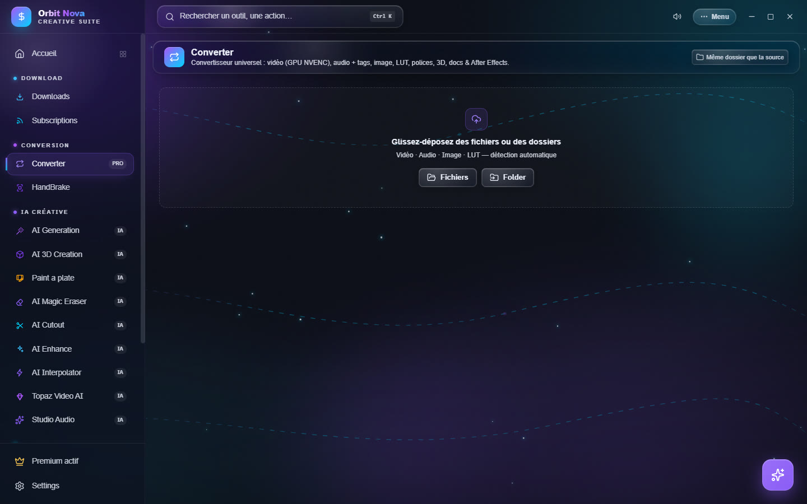
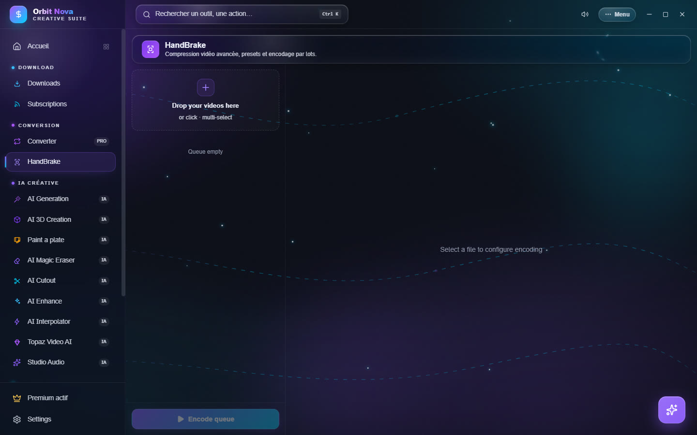

Conversion
The Converter
The Converter turns almost any kind of file into another. Drop files or whole folders (Orbit goes through subfolders) in the area, or click the files or folder button. Orbit recognizes each file and offers the possible output formats.


| Category | Input | Output |
|---|---|---|
| Video | MP4, MKV, MOV, AVI, WEBM… | MP4, MOV, ProRes, MKV, WEBM, AVI, GIF, or audio extraction (MP3, WAV, FLAC, M4A) |
| Audio | MP3, WAV, FLAC, M4A, OGG… | WAV, MP3, FLAC, AAC, OGG, OPUS, M4A, with tag editing (title, artist, album, year, cover) |
| Image | JPG, PNG, WEBP, HEIC, TIFF, BMP… | PNG, JPG, WEBP, AVIF, TIFF, BMP |
| LUT | .cube, .3dl |
.cube ↔ .3dl |
| Fonts | TTF, OTF | TTF, WOFF, WOFF2 |
| 3D | FBX, OBJ, GLB, GLTF, STL, PLY, DAE… | GLB, OBJ, STL, PLY |
| Documents | DOCX, XLSX, Markdown | PDF, HTML |
| After Effects | .ffx, .aep |
analysis (effects and required plugins) and After Effects version change |
Video settings
Select a video file to see its settings:
- Encoder: Auto (GPU if available), NVIDIA GPU (NVENC) (much faster) or Processor (CPU) (slightly smaller files). If the GPU fails, Orbit retries on the processor by itself.
- Codec: H.264 (works everywhere), H.265, AV1, or fast copy (no re-encoding, instant, when the output format allows it).
- Quality: high, balanced or small, and a maximum height (1080p, 720p…).
- Target size: to stay under an upload limit: Discord (10 MB), WhatsApp (16 MB), E-mail (25 MB), Discord Nitro (50 MB), Nitro+ (500 MB) or a custom size.
Every audio track and the subtitles are kept when the container accepts them. If a track cannot be kept (for example image subtitles in an MP4), the row says so in orange.
The queue
Drag a row by its handle to change the order: the queue always takes the first waiting row, even if you reorder it during the conversion. With the graphics card, two videos are converted at the same time.
After Effects
For a .ffx preset or a .aep project, Orbit lists the effects used and the third-party plugins required.
It can also change the After Effects version of a file so it opens in an older or newer version, and, if After
Effects is installed on your PC, use it to save a project in another version or apply a preset to a
composition.
HandBrake
The HandBrake tab drives the well-known encoder for advanced compression. The first time, click Install HandBrake (automatic download).


- Drop your videos in the area (several at once).
- Select a file to set its encoding, or set it once and apply it to the whole queue.
- Click Encode queue.
The settings, by section:
- Preset & Format: an official HandBrake preset as a base, or None (manual settings); container; Web optimized (progressive playback).
- Video: encoder, encoding speed, Constant quality (RF) (lower = better) or Average bitrate with 2-pass; maximum resolution; frames per second; rotation. The estimated size is shown.
- Filters: denoise (NLMeans), sharpen (Lapsharp), deinterlace, deblock, black and white.
- Audio & Output: Copy (no re-encoding) or audio bitrate; Keep subtitles; output folder.
Save your settings as a personal preset to find them later.